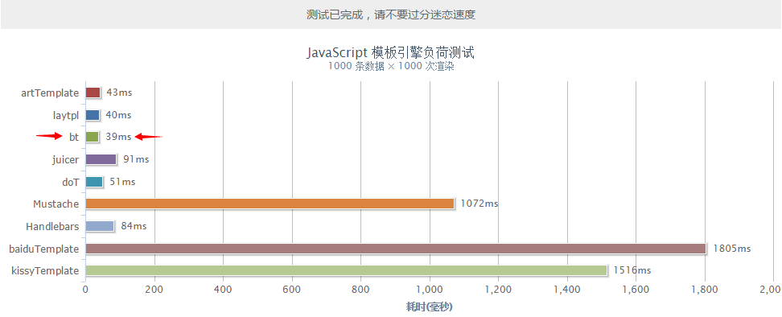

bt 模版引擎立志成为极简极致的模版引擎，bt 对于性能的追求到达极致，几乎超越市面上已有的任何模版引擎。bt 引擎采用惰性函数模式，让模版性能更是到达巅峰。经过极端的压力测试，性能与 laytpl, doT, artTemplate 并驾齐驱，更是比其他引擎快了20-40倍不止。(性能测试)
语法方面，除了几个特定的符号，其他代码可以直接用原生js语法书写 (Native JavaScript) 让您的学习成本降低到几乎为零。
在 1.3 以后的版本，更是添加了数组迭代和过滤器的功能，让您能更加方便的渲染数据。
从 1.4 版本开始，分为 极致版(v1.x) 和 扩展版(v2.x) 两个版本，版本号 1.x 为极致版，2.x 为扩展版。
极致版不包含过滤器，后期不再扩展功能。扩展版包含过滤器功能，但要配合过滤器文件使用。
开源协议 MIT github.com/52cik/btpl

1. 在你的html中引入 bt.js 或者 bt.min.js 文件
<script type="text/javascript" src="bt.min.js"></script>2. 准备数据，例如你有以下数据：
var data = {
title: '前端圈',
intro: '一群码js的骚年，幻想改变世界，却被世界改变。',
list: [
{name: '贤心', city: '杭州'},
{name: '乱码', city: '杭州'},
{name: '谢亮', city: '北京'},
{name: '浅浅', city: '杭州'},
{name: 'Dem', city: '北京'}
]
};3. 根据数据编写你的模版
<h3>{{ d.title }}</h3>
<p class="intro">{{ d.intro }}</p>
<ul>
{{# for(var i = 0, len = d.list.length; i < len; i++){ }}
<li>
<span>{{ d.list[i].name }}</span>
<span>所在城市：{{ d.list[i].city }}</span>
</li>
{{# } }}
</ul>4. ok 完成了。
{{ }} 输出一个普通字段 (别名 插值表达式)
{{= }} 输出一个实体转码后的字段
{{# }} JavaScript脚本
{{@ }} 迭代标签PS: 要注意操作符的符号不能和 {{ 直接有空格，
比如 {{ = d.text }} 这样是错误的，一定要写成 {{= d.text }} 才对，
操作符后面的空格随意，闭合标签 }} 前面的空格也随意，
所以你可以 {{= d.text }} 这样写也是没问题的。
/**
* 核心函数
* @param {string} tpl 模板数据
* @param {object} options [可选] 配置参数 (详见下面 修改引擎配置 部分)
* @return {object} 返回模版引擎对象
*/
bt(tpl, options);
// 先用 var tpl = bt(tpl); 得到模版引擎对象后
/**
* 渲染数据，生成最终展示的html代码
* @param {object} data 待渲染的数据
* @return {string} 渲染后的html
*/
tpl.render(data);
/**
* 修改引擎配置
* @param {object}
*/
bt.config(options);
// options 配置参数如下
{
begin: "{{", // 模板起始标签
end: "}}", // 模板闭合标签
varname: "d", // 对象替换符
strip: true // 忽略空白符
}
/**
* 得到版本号
* @type {number}
*/
bt.ver;
/** 以下是拓展版功能 **/
/**
* 注册过滤器
* @param {string} name 过滤器名
* @param {function} callback 回调函数
*/
bt.filter = function (name, callback);
// 在 filters.js 文件中有几个默认过滤器例子，你也可以在 filters.js 文件中添加自己的过滤器